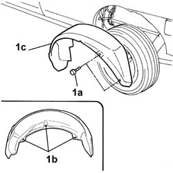

7055B43 REAR WHEEL ARCH liner (one), left or right - R.R.
- Path
- Procedures > 70 FITTINGS > 7055 MOULDING AND PROTECTION > 7055B exterior protections > 7055B43 REAR WHEEL ARCH liner (one), left or right - R.R.
- Kind
- repair procedure (removal / refitting; the operation number is the code)
- Applies to
- all engines; all production periods
- Interactive page
- https://sloeber94.github.io/elrnDB-fDbl/en/#/2585220
Applies to: all engines; all production periods
 Removing
Removing
 Refitting
RefittingOp. 4450B06 LEFT REAR WHEEL - R.R.
1. Undo the bolts (1a) and the nuts (1b) and remove the rear wheel arch (1c).

Applies to: all engines; all production periods
Refitting
RemovingFit the wheel arch in its housing and secure it using the nuts and bolts.
Topics linked from this page (1)
Topics that link to this page (7)
- 1040A10 fuel tank - r + r and decant fuel
- 1040A14 fuel tank - r + r for replacement
- 1040A30 fuel filler pipe - r + r
- 1040A31 fuel filler pipe - rigid section - r r
- 1040A32 fuel filler pipe union sleeve - r + r
- 1080E13 float valve (one) (preventing fuel emerging from tank) - r+r
- 3340B70 RIGID PIPE (one), left or right, from connector to intermediate cable - R.R.